速览
世上的制作物都存在指导规范（guideline）：要求严格遵守，不满足就不能作为产品或服务提供，除了非常简单的东西，几乎都有设定。例如《俄罗斯方块》：在地面上转方块，落下的方块会一直不被固定，甚至可能无限滑动（Infinity）——这似乎是 The Tetris Company 在 2002 年左右制定的规范，此后的俄罗斯方块都应遵守。以前的俄罗斯方块操作方法、旋转规则等不统一，有各种版本，每次都不同，坦白说很难玩。现在有各形状的颜色分配、NEXT 方块数、旋转轴、落点提示显示等规范，似乎全世界通用。规范之所以被制定，必有其意义；但创作者想自由地做东西，所以妨碍创作的情况也不少：年龄分级、游戏平台或商店、在线服务、自家公司的规范……做出来的东西并不是原样推出，而是全部严守规范，于是会产生相应的矛盾：为某种目的想加入的表现，因规范做不了，玩家又不知道原因，印象可能就不好。前面的俄罗斯方块，在街机等收益性有问题的情况下似乎也允许例外。说到底，不论是不是规范，都是人决定的，有合适的也有不合适的，很难。如果允许，希望任何规范都能更灵活——因为最终能做出好东西才是最好的。
1. 什么是指导规范 0:04
世上的制作物都存在指导规范：要求严格遵守，不满足就不能作为产品或服务提供。除了非常简单的东西，几乎都有。
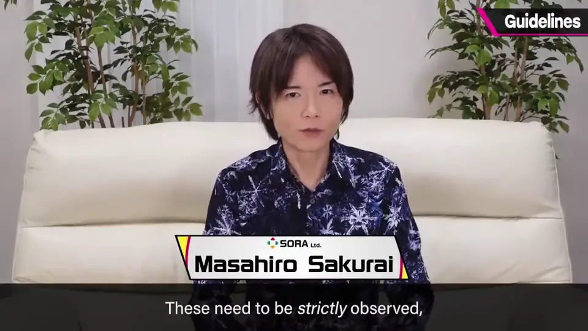
2. 例：《俄罗斯方块》 0:32
例如《俄罗斯方块》：在地面上旋转方块，落下的方块会一直不被固定，甚至可能无限滑动。
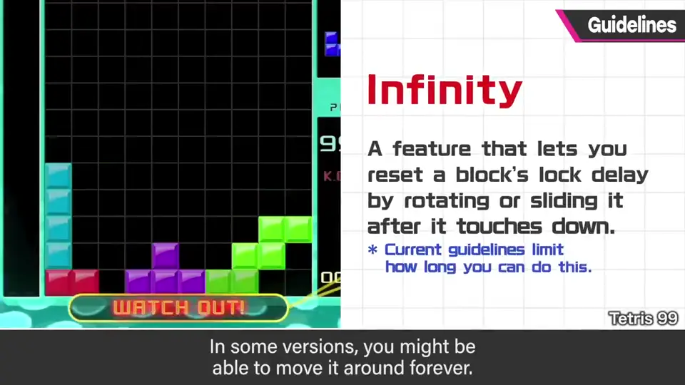
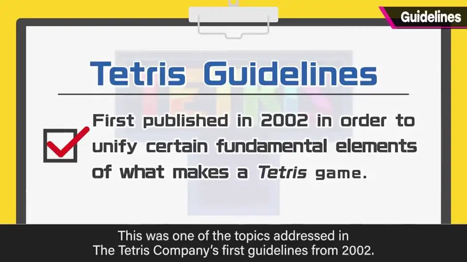
这似乎是 The Tetris Company 2002 年左右制定的规范，此后的俄罗斯方块都应遵守。
以前的俄罗斯方块操作方法、旋转规则不统一，有各种版本——每次都不同，坦白说很难玩。
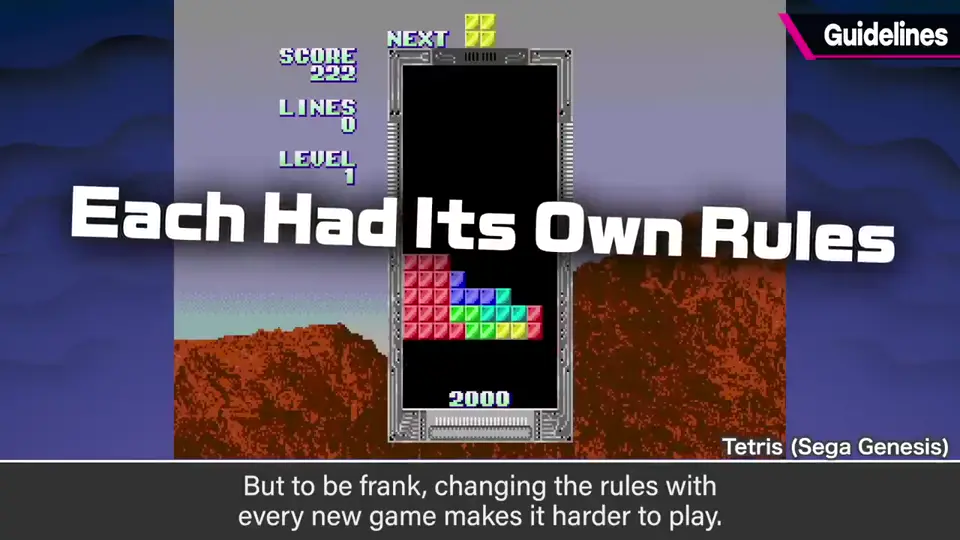
- 现在统一了：各形状的颜色分配、NEXT 方块数、旋转轴、落点提示等，似乎全世界通用。
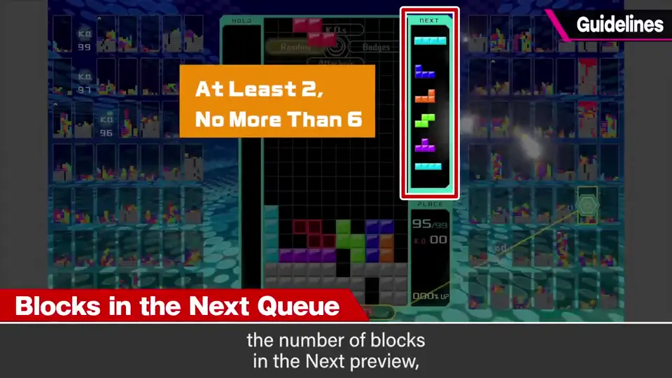
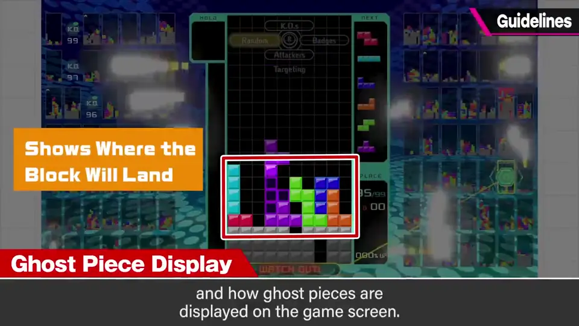
3. 规范与创作自由 1:27
规范之所以被制定，必有意义。但创作者想自由地做东西，所以妨碍创作的情况也不少。
- 年龄分级的规范。
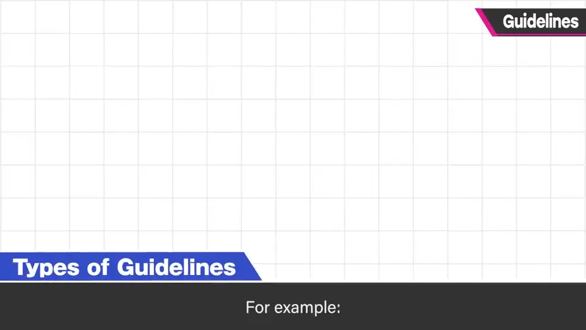
- 游戏平台、商店、在线服务的规范。
- 自家公司的规范。
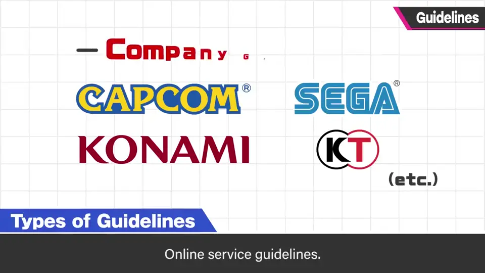
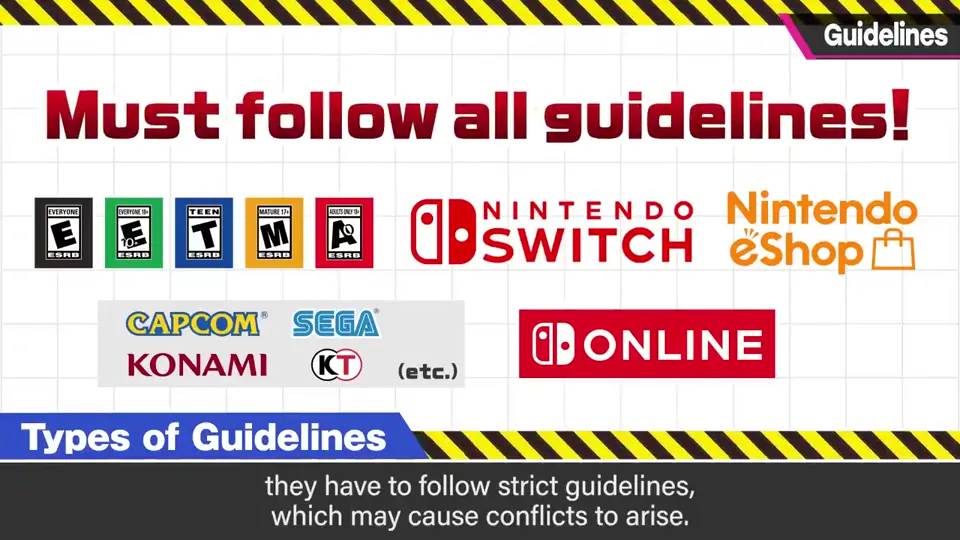
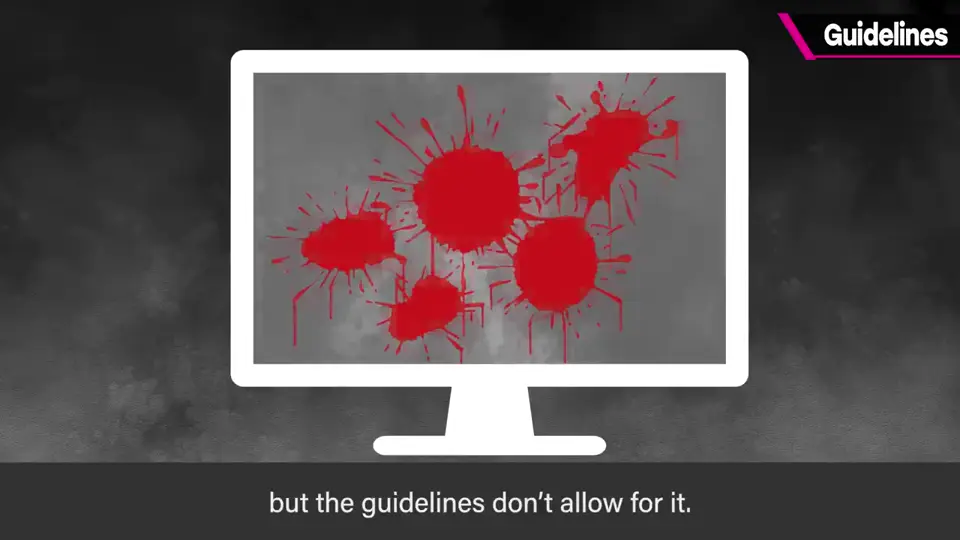
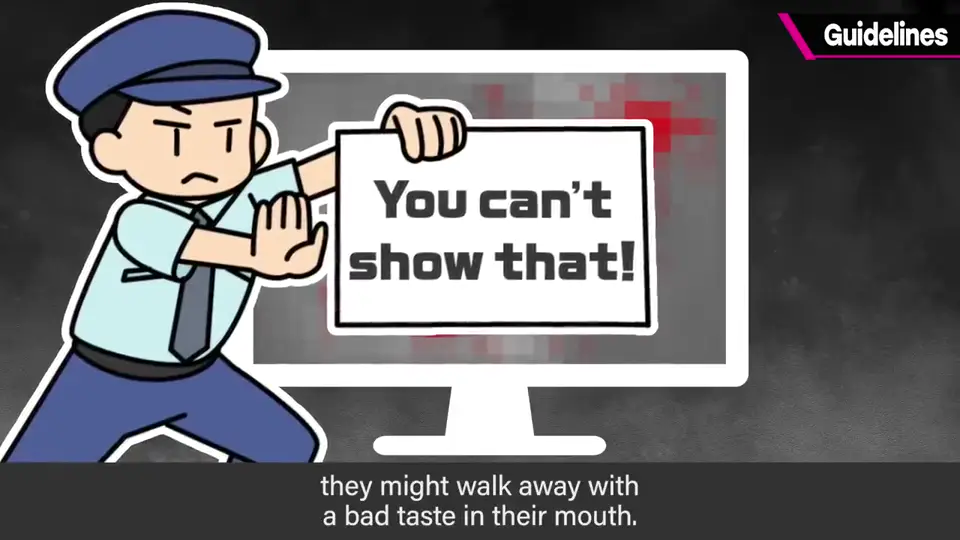
4. 规范是人定的 2:18
俄罗斯方块在收益性有问题的街机等情况下，似乎也允许例外。
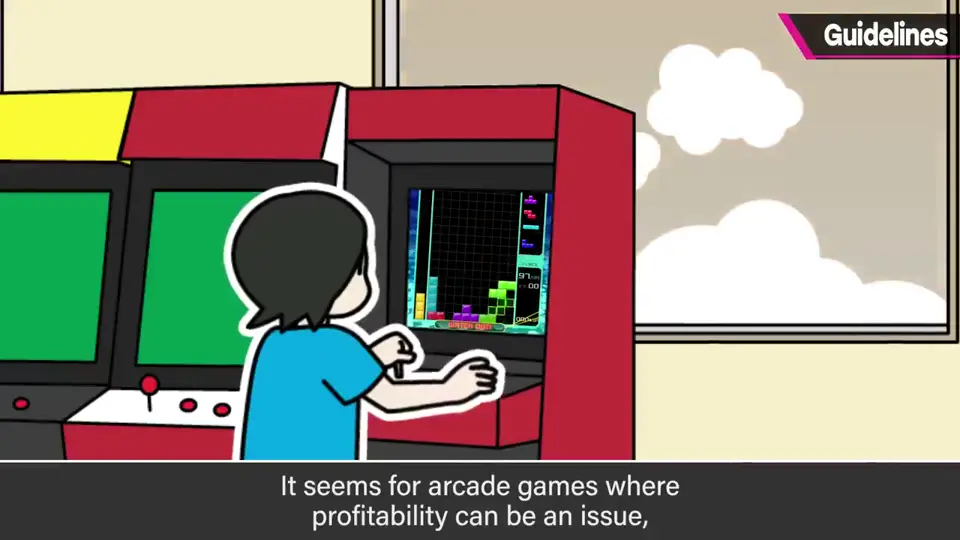
自测题
1. 《俄罗斯方块》规范统一了哪些内容？为什么需要？
方块颜色、NEXT 数、旋转轴、落点提示等；以前各版本规则不同，很难玩。 1:15
2. 规范给创作者带来什么矛盾？
想加入的表现因规范做不了，而玩家不知原因，印象可能变差。 2:08
3. 樱井对规范的最终看法是？
规范是人定的，有合有不合；希望能更灵活，做出好东西才最重要。 2:30